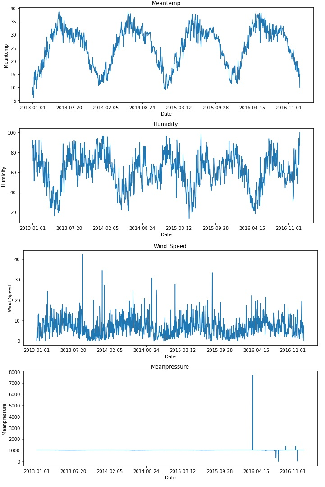
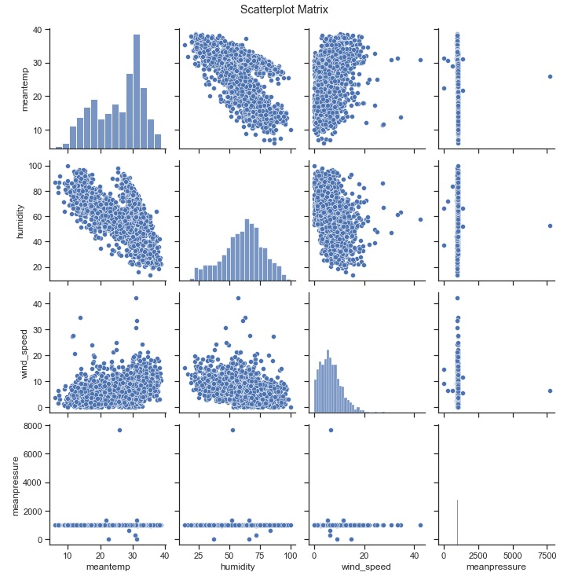
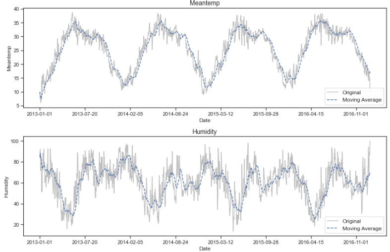
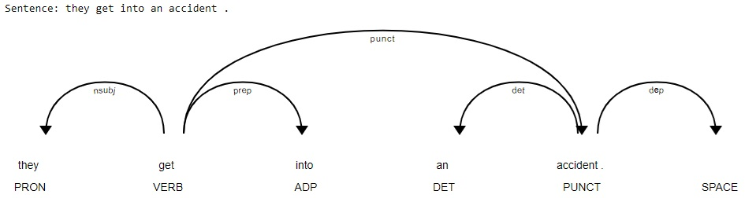
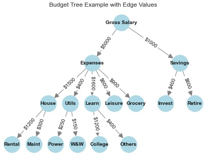
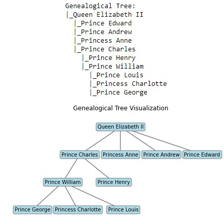
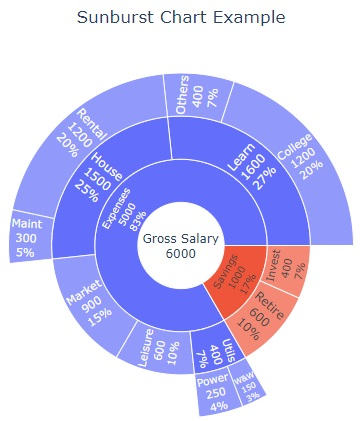
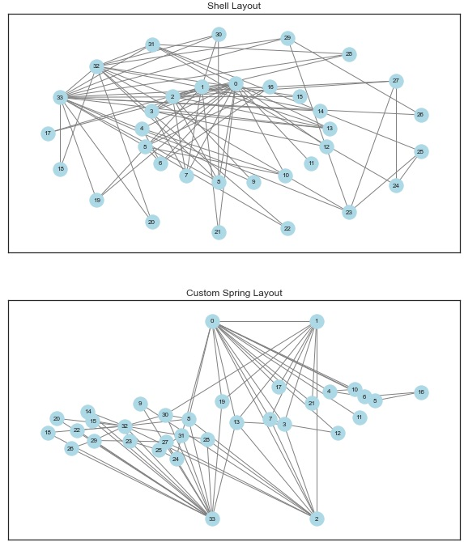
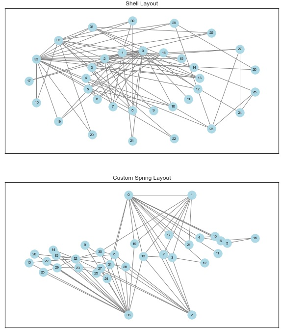
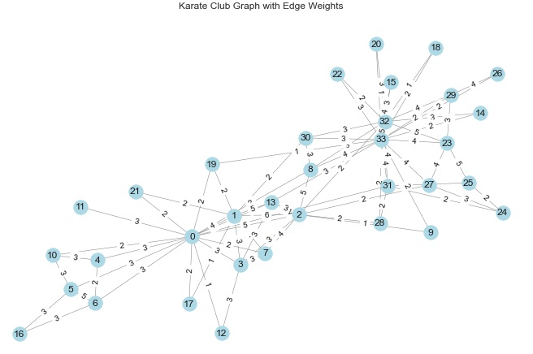

6 — Special Types of Data#
Modern data analysis often extends beyond traditional tabular datasets and requires methods capable of handling data with additional structure and complexity. Special types of data, such as time series, text and document collections, and trees and networks, introduce characteristics like temporal ordering, linguistic semantics, and relational dependencies that fundamentally affect how data should be explored, summarized, and visualized.
In Exploratory Data Analysis these data types require adapted descriptive measures and visualization strategies, since standard summary statistics and charts may fail to capture key structural properties. This module introduces exploratory techniques tailored to time series, text data, and relational structures, equipping students with the tools needed to analyze complex data effectively and to prepare for more advanced modeling, storytelling, and decision-support applications.
Learning outcomes#
By the end of this module, you should be able to:
Identify the defining characteristics of time series, text/document, and graph-based data.
Perform descriptive exploratory analysis for each type (summary measures and structural indicators).
Select and build appropriate visualizations to reveal patterns (trends/seasonality; lexical patterns; hierarchical and relational structures).
Apply moving averages and seasonal decomposition to time series for trend/seasonality inspection.
Create basic text representations (lexical representations, document-term matrices) and visualize text patterns.
Compute and interpret core network measures (degree, density, centrality) and visualize networks using multiple layouts.
6.1 Time Series#
A time series (TS) is a sequence of observations indexed by time. The temporal order introduces dependence patterns (trend, seasonality, autocorrelation) that require analysis methods beyond those used for independent observations.
6.1.1 Characteristics of Time Series#
Time series may be observed at different granularities (e.g., milliseconds → years) and can be characterized by properties such as:
Time dependence (ordering by time)
Trend (long-term direction)
Seasonality (repeating patterns over fixed intervals)
Cyclicity (recurrent, but not necessarily fixed-period patterns)
Autocorrelation (relationship between values at different lags)
Stationarity (statistical properties remaining constant over time)
Table: Time series characteristics.
Characteristic |
Description |
|---|---|
Time dependence |
Time series data are ordered according to a given time scale. |
Predictability |
Time series can be either deterministic, in the sense that the series values can be predicted exactly, or stochastic (random), in the sense that future values are only partly determined by past values. |
Seasonality |
Seasonality is related to patterns that are repeated at fixed time intervals or within specific time periods. |
Cyclicity |
If the fluctuations in the time series behavior are not repeated at fixed time intervals or within specific periods, they are said to be cyclic. Thus, a seasonal behavior is a cyclic one that follows fixed time intervals. |
Autocorrelation |
Relationship of the data at different instants of time. |
Stationarity |
A time series may have some of its statistical properties constant over time. |
Trend |
A trend is a long-term pattern or direction presented by the time series, summarizing its behavior over longer periods of time. A trend can be increasing or growing, decreasing, or stable. |
6.1.2 Objectives of Time Series Exploratory Data Analysis#
Common objectives include:
Description: identify trend, seasonality, cycles, changes, and unusual events.
Explanation: relate variations in the series to other variables or external factors.
Prediction: forecast future values or patterns.
Control: apply interventions to achieve a desired future behavior.
6.1.3 Time Series Descriptive Analysis#
A typical starting point is summary statistics (mean, standard deviation, quartiles, min/max) computed across the time-indexed observations.
Table: Summary measures for the Daily Delhi Climate Train Data.
Statistic |
meantemp |
humidity |
wind_speed |
meanpressure |
|---|---|---|---|---|
mean |
25.496 |
60.772 |
6.802 |
1011.105 |
std |
7.348 |
16.770 |
4.562 |
180.232 |
min |
6.000 |
13.429 |
0.000 |
-3.042 |
25% |
18.857 |
50.375 |
3.475 |
1001.580 |
50% |
27.714 |
62.625 |
6.222 |
1008.563 |
75% |
31.306 |
72.219 |
9.238 |
1014.945 |
max |
38.714 |
100.000 |
42.220 |
7679.333 |
6.1.4 Time Series Data Visualization#
Time series visualization most commonly uses line charts (value vs. time), potentially complemented by:
Boxplots per period (e.g., month) to compare distributions across cycles.
Scatterplot matrices to inspect relationships among multiple time-indexed variables.
Heatmaps/correlograms for correlation structures.
Python Code — Line charts, boxplots, scatterplot matrix and heatmap#
# CODE 6.1
# Code to generate the line charts, boxplots, scatterplot matrix and heatmap
# of the Daily Delhi Climate Train Data
import pandas as pd
import matplotlib.pyplot as plt
import seaborn as sns
# Line charts for the Daily Delhi Climate Train Data
df = pd.read_csv('DailyDelhiClimateTrain.csv')
variables = ['meantemp', 'humidity', 'wind_speed', 'meanpressure']
dDelhi = df[variables]
# Line charts
fig, axes = plt.subplots(nrows=len(variables), figsize=(10, 16))
for i, var in enumerate(variables):
axes[i].plot(df['date'], dDelhi[var], linestyle='-')
axes[i].xaxis.set_major_locator(plt.MaxNLocator(integer=True))
plt.show()
# Box plots
dDelhi_normalized = (dDelhi - dDelhi.min()) / (dDelhi.max() - dDelhi.min())
fig, axes = plt.subplots(1, 2, figsize=(14, 6))
for i, ax in enumerate(axes):
ax.boxplot(dDelhi if i == 0 else dDelhi_normalized)
ax.set_title('Boxplot - {}'.format('Original Data' if i == 0 else 'Normalized Data'))
ax.set_ylabel('Value')
ax.set_xticklabels(variables)
plt.show()
# Scatterplot matrix and Heatmap for the Daily Delhi Climate Train Data
g = sns.pairplot(dDelhi)
plt.suptitle('Scatterplot Matrix', y=1.02)
plt.show()
# Heatmap
corr_matrix = dDelhi.corr()
plt.figure(figsize=(8, 6))
g = sns.heatmap(corr_matrix, annot=True, cmap='coolwarm')
plt.title('Heatmap - Correlation')
plt.show()




Prompt — Line charts, boxplots, scatterplot matrix and heatmap#
You are a data visualization assistant supporting an **Advanced Exploratory Data Analysis (AEDA)** course.
Your task is to **exploratorily visualize a multivariate climate time series dataset** in order to understand temporal behavior, distributional properties, relationships among variables, and correlation structure.
## Dataset Context
- The dataset represents **daily climate measurements** collected over time.
- It contains one **time variable** (date) and multiple **continuous numerical variables** related to weather conditions (e.g., temperature, humidity, wind, pressure).
## High-Level Objectives
1. **Visualize temporal evolution**
- Create a set of **line charts**, one per variable, showing how each climate variable evolves over time.
- Align the time axis across plots to allow visual comparison of trends, variability, and potential seasonality.
2. **Compare distributions and scale effects**
- Generate **boxplots** for all variables using:
- The original data values.
- A normalized version of the same variables.
- Place both boxplots side by side to highlight differences in scale, spread, and outlier behavior.
3. **Explore pairwise relationships**
- Produce a **scatterplot matrix** displaying all pairwise combinations of the numerical variables.
- Use this visualization to inspect associations, clusters, nonlinear patterns, and potential outliers.
4. **Summarize correlation structure**
- Compute the **correlation matrix** among the numerical variables.
- Visualize it using a **heatmap** with annotated correlation values.
- Use color intensity to emphasize the strength and direction of correlations.
## Expected Outcome
The result should be a coherent set of visualizations that together provide:
- Insight into **temporal dynamics** of each variable,
- Understanding of **distributional characteristics** and the impact of normalization,
- Visual assessment of **pairwise relationships**,
- A concise overview of **linear correlations** among variables.
The emphasis should be on **exploratory insight and interpretability**, not on implementation details or low-level plotting commands.
6.1.5 Moving Average and Seasonal Decomposition#
Moving average (rolling mean)#
A moving average smooths short-term fluctuations by averaging a window of size \(w\):
\(SMA_{t} = \frac{1}{w} \sum_{i=0}^{w-1} x_{t-i}\)
where \(SMA_t\) is the smoothed value of the time series at time \(t\), obtained after applying the moving average, \(x_t\) is the original observed value of the time series at time \(t\), \(x_{t-i}\) represents past observations, with \(i\) indicating how many time steps before \(t\) the value was recorded, \(w\) is the window size, that is, the number of consecutive observations included in the moving average, \(\sum_{i=0}^{w-1} x_{t-i}\) denotes the sum of the last \(w\) observations up to time \(t\), and \(\frac{1}{w}\) is the normalization factor that computes the average of the selected observations.
Larger windows produce smoother curves but can blur short-term changes.
Python Code — Moving averages for variables ‘meantemp’ and ‘humidity’#
# CODE 6.2
# Moving averages for variables 'meantemp' and 'humidity'
# of the Daily Delhi Climate Train Data
import pandas as pd
import matplotlib.pyplot as plt
# Load the dataset and extract the variables
df = pd.read_csv('DailyDelhiClimateTrain.csv')
dDelhi = df[['meantemp', 'humidity', 'date']]
# Create a single figure with subplots stacked vertically
fig, axes = plt.subplots(nrows=2, figsize=(12, 8))
vars_and_indices = [('meantemp', 0), ('humidity', 1)]
for var, i in vars_and_indices:
axes[i].plot(dDelhi['date'], dDelhi[var], linestyle='-', color='gray', alpha=.5, label='Original')
axes[i].plot(dDelhi['date'], dDelhi[var].rolling(window=5, min_periods=1).mean(),
linestyle='--', label='Moving Average')
axes[i].set_xlabel('Date')
axes[i].xaxis.set_major_locator(plt.MaxNLocator(integer=True))
axes[i].legend(fontsize=12)
# Save and display the plot
plt.savefig("Figure_6_5a_Moving_Averages_w5.svg", format="svg", dpi=1500, bbox_inches='tight')
plt.show()
# Create a single figure with subplots stacked vertically
fig, axes = plt.subplots(nrows=2, figsize=(12, 8))
vars_and_indices = [('meantemp', 0), ('humidity', 1)]
for var, i in vars_and_indices:
axes[i].plot(dDelhi['date'], dDelhi[var], linestyle='-', color='gray', alpha=.5, label='Original')
axes[i].plot(dDelhi['date'], dDelhi[var].rolling(window=20, min_periods=1).mean(),
linestyle='--', label='Moving Average')
axes[i].set_xlabel('Date')
axes[i].xaxis.set_major_locator(plt.MaxNLocator(integer=True))
axes[i].legend(fontsize=12)
plt.show()


Prompt — Moving averages for variables ‘meantemp’ and ‘humidity’#
You are a data visualization assistant supporting an **Advanced Exploratory Data Analysis (AEDA)** course.
Your task is to **illustrate the effect of temporal smoothing on climate time series data** using moving averages, highlighting how different window sizes influence trend perception.
## Dataset Context
- The dataset contains **daily climate observations** recorded over time.
- Focus on two continuous variables:
- Mean temperature
- Humidity
- A time variable (date) defines the temporal ordering of observations.
## High-Level Objectives
1. **Visualize original time series behavior**
- For each selected variable, plot its values over time using a line chart.
- Use a consistent temporal axis to preserve continuity and allow direct visual interpretation of fluctuations.
2. **Apply and compare temporal smoothing**
- Compute and overlay **moving average curves** on top of each original time series.
- Use two different smoothing windows:
- A **short-term window** to capture local variations.
- A **long-term window** to emphasize broader trends.
3. **Organize visual comparison**
- Arrange the visualizations in **stacked subplots**, one per variable, within the same figure.
- Ensure both the original series and the smoothed series are visible simultaneously for comparison.
4. **Support interpretability**
- Clearly distinguish original data from moving averages through line styles or visual emphasis.
- Include legends and axis labels that reinforce the analytical goal.
## Expected Outcome
The resulting figures should:
- Reveal how short-term noise and long-term trends differ in climate variables,
- Demonstrate the impact of window size on smoothing strength,
- Support exploratory reasoning about trend, seasonality, and variability in time series data.
The focus should be on **conceptual understanding of temporal smoothing**, not on implementation details or plotting mechanics.
Seasonal decomposition#
Seasonal decomposition separates a series into trend, seasonal, and residual components. Two common models are:
Additive: \(y_t = T_t + S_t + R_t\)
Multiplicative: \(y_t = T_t \cdot S_t \cdot R_t\)
Python Code — Time series decomposition of the ‘meantemp’ variable
# CODE 6.3
# Time series decomposition of the 'meantemp' variable
# of the Daily Delhi Climate Train data
import pandas as pd
import matplotlib.pyplot as plt
from statsmodels.tsa.seasonal import seasonal_decompose
# Load the dataset
dDelhi = pd.read_csv('DailyDelhiClimateTrain.csv')
# Extract the variable and set the date column as the index
variable = 'meantemp'
dDelhi['date'] = pd.to_datetime(dDelhi['date'])
dDelhi.set_index('date', inplace=True)
# Perform seasonal decomposition
decomposition = seasonal_decompose(dDelhi[variable], model='additive', period = 50)
# Plot the original, trend, seasonal, and residual components
fig, (ori, trnd, seas, resi) = plt.subplots(4, 1, figsize=(12, 10), sharex=True)
dDelhi[variable].plot(ax=ori)
ori.set_ylabel('Original', fontsize=14)
decomposition.trend.plot(ax=trnd)
trnd.set_ylabel('Trend', fontsize=14)
decomposition.seasonal.plot(ax=seas)
seas.set_ylabel('Seasonal', fontsize=14)
decomposition.resid.plot(ax=resi)
resi.set_ylabel('Residual', fontsize=14)
plt.xlabel('Date', fontsize=14)
plt.suptitle(f'Time Series Decomposition - {variable}', fontsize=16, y=0.92)
plt.show()

Prompt — Time series decomposition of the ‘meantemp’ variable
You are a data visualization assistant supporting an **Advanced Exploratory Data Analysis (AEDA)** course.
Your task is to **decompose a climate-related time series into its fundamental components** in order to better understand its underlying structure.
## Dataset Context
- The dataset contains **daily climate observations** recorded over time.
- Focus on a single continuous variable representing **mean temperature**.
- A date variable defines the temporal ordering of the observations.
## High-Level Objectives
1. **Analyze the structure of a time series**
- Treat the temperature measurements as an ordered time series indexed by date.
- Preserve temporal continuity so that long-term and recurring patterns can be identified.
2. **Separate the time series into components**
- Perform a **seasonal decomposition** using an additive model.
- Decompose the series into the following components:
- **Original series**: the observed data.
- **Trend**: the long-term movement of the series.
- **Seasonal**: repeating patterns occurring at regular intervals.
- **Residual**: irregular fluctuations and noise not explained by trend or seasonality.
3. **Create a structured multi-panel visualization**
- Display the original series and each decomposed component in **stacked subplots**.
- Share the same time axis across all plots to enable direct comparison.
4. **Support interpretation and insight**
- Clearly label each subplot according to the component it represents.
- Use the visual layout to highlight how the observed data can be explained by trend, seasonality, and residual variation.
## Expected Outcome
The resulting figure should provide:
- A clear visual breakdown of how the temperature time series behaves over time,
- Insight into long-term trends and recurring seasonal effects,
- An understanding of the magnitude and nature of unexplained variability.
The emphasis should be on **conceptual understanding of time series decomposition** and exploratory insight, not on implementation details or plotting mechanics.
6.2 Text and Document Data#
Text and document data are often unstructured or semi-structured. EDA for text typically starts by choosing a representation (lexical counts, bag-of-words, TF–IDF, embeddings) and then applying descriptive measures and visualizations tailored to language.
6.2.1 Objectives of Text and Document Exploratory Data Analysis#
Typical objectives include:
Identify themes/topics and frequently occurring terms.
Compare language patterns across subsets (e.g., positive vs. negative reviews).
Assess corpus properties (vocabulary size, sparsity, stop-word prevalence).
Support downstream tasks such as classification, clustering, or retrieval.
6.2.2 Text Structuring#
One way to analyze text computationally is to transform it into structured representations. Common choices include:
Lexical statistics (counts of characters/words/sentences)
Bag-of-words / document-term matrix (DTM)
TF–IDF weighting
N-grams and co-occurrence structures
Text and document data are inherently unstructured and must be transformed into a structured numerical representation before descriptive analysis and visualization can be performed. A common approach is to represent a collection of documents as a set of feature vectors, where each document is mapped into a fixed-dimensional space defined by the vocabulary extracted from the corpus.
Formally, consider a corpus with \(N\) documents and a vocabulary of \(m\) distinct terms (tokens). Each document \(d_i\) is represented by a feature vector \(\mathbf{w}_i \in \mathbb{R}^m\), where each component corresponds to a specific term in the vocabulary:
Document |
\(t_1\) |
\(t_2\) |
\(t_3\) |
\(\cdots\) |
\(t_m\) |
|---|---|---|---|---|---|
\(d_1\) |
\(w_{11}\) |
\(w_{12}\) |
\(w_{13}\) |
\(\cdots\) |
\(w_{1m}\) |
\(d_2\) |
\(w_{21}\) |
\(w_{22}\) |
\(w_{23}\) |
\(\cdots\) |
\(w_{2m}\) |
\(\vdots\) |
\(\vdots\) |
\(\vdots\) |
\(\vdots\) |
\(\ddots\) |
\(\vdots\) |
\(d_N\) |
\(w_{N1}\) |
\(w_{N2}\) |
\(w_{N3}\) |
\(\cdots\) |
\(w_{Nm}\) |
where, \(w_{ij}\) represents the weight associated with term \(t_j\) in document \(d_i\). Depending on how this weight is defined, different lexical representations can be obtained, each emphasizing distinct characteristics of the text.
Binary Representation#
In the binary representation, the weight indicates only the presence or absence of a term in a document:
\(w_{ij} =\)
1, if \(t_j\) appears in document \(d_i\)
0, otherwise
This representation ignores term frequency and is useful when the mere occurrence of a term is more relevant than how often it appears.
Absolute Frequency (Term Count)#
In the absolute frequency representation, the weight corresponds to the number of times a term appears in a document:
\(w_{ij} = \text{tf}(t_j, d_i)\)
where \(\text{tf}(t_j, d_i)\) denotes the term frequency of \(t_j\) in document \(d_i\). This representation captures within-document importance but tends to favor longer documents.
Relative (Normalized) Frequency#
To reduce the influence of document length, term frequencies can be normalized by the total number of terms in the document:
\(w_{ij} = \frac{\text{tf}(t_j, d_i)}{\sum_{k=1}^{m} \text{tf}(t_k, d_i)}\)
This representation reflects the relative importance of a term within a document and allows fairer comparisons across documents of different sizes.
TF–IDF (Term Frequency–Inverse Document Frequency)#
The TF–IDF representation assigns weights that balance local importance within a document and global rarity across the corpus:
\(w_{ij} = \text{TF}(t_j, d_i) \cdot \log\left(\frac{N}{\text{DF}(t_j)}\right)\)
where \(\text{TF}(t_j, d_i)\) is the term frequency of \(t_j\) in document \(d_i\), \(\text{DF}(t_j)\) is the number of documents containing term \(t_j\), and \(N\) is the total number of documents in the corpus.
TF–IDF emphasizes terms that are frequent in a specific document but uncommon across the corpus, making it particularly effective for exploratory text analysis, document comparison, and information retrieval.
Together, these representations transform unstructured text into structured numerical data, enabling descriptive statistics, visualization, and further exploratory analysis of text and document collections.
N-grams#
In addition to single-word terms (unigrams), text can be structured using n-grams, which are contiguous sequences of \(n\) tokens. N-grams allow the representation to capture local word order and short contextual patterns that are not visible when using individual tokens alone.
Unigrams (\(n = 1\)): single tokens (e.g., data, analysis)
Bigrams (\(n = 2\)): pairs of consecutive tokens (e.g., data analysis)
Trigrams (\(n = 3\)): sequences of three consecutive tokens (e.g., exploratory data analysis)
When n-grams are used, each n-gram becomes a feature in the vocabulary, and its corresponding weight \(w_{ij}\) can be defined using any of the previously described schemes:
\(w_{ij} = \text{TF}(\text{ngram}_j, d_i)\)
or
\(w_{ij} = \text{TFIDF}(\text{ngram}_j, d_i)\)
N-gram representations often provide richer descriptive power by capturing phrases, expressions, and short semantic units commonly used in text.
Python Code — Structure texts using Lexical Representations (Part 1)#
# CODE 6.4a
# Code to structure texts using Lexical Representations
import nltk
from nltk.corpus import movie_reviews
from nltk.tokenize import word_tokenize
from nltk.corpus import stopwords
from nltk.stem import PorterStemmer
from sklearn.feature_extraction.text import CountVectorizer, TfidfVectorizer
# Download the IMDb corpus and the stoplist
nltk.download('movie_reviews')
nltk.download('stopwords')
nltk.download('punkt_tab')
# Load the movie reviews dataset
documents = [(list(movie_reviews.words(fileid)), category)
for category in movie_reviews.categories()
for fileid in movie_reviews.fileids(category)]
# Tokenization
tokenized_docs = [" ".join(words) for words, category in documents]
# Stopwords removal and printing
stop_words = set(stopwords.words('english'))
print("Stopwords contained in the stopwords file in NLTK:")
print(stop_words)
filtered_docs = [" ".join([word for word in word_tokenize(doc.lower())
if word.isalpha() and word not in stop_words])
for doc in tokenized_docs]
# Stemming
stemmer = PorterStemmer()
stemmed_docs = [" ".join([stemmer.stem(word) for word in word_tokenize(doc)])
for doc in filtered_docs]
Stopwords contained in the stopwords file in NLTK: {‘she’, ‘themselves’, ‘doesn’, ‘such’, ‘at’, “doesn’t”, ‘so’, ‘when’, “shan’t”, ‘no’, “hadn’t”, ‘is’, ‘these’, ‘was’, ‘be’, “wasn’t”, “i’ll”, ‘it’, ‘ourselves’, ‘to’, “should’ve”, “shouldn’t”, ‘couldn’, ‘or’, “we’ll”, ‘if’, ‘wouldn’, “he’ll”, ‘himself’, ‘each’, ‘has’, ‘aren’, ‘only’, “it’s”, “didn’t”, ‘who’, ‘through’, ‘while’, ‘weren’, ‘been’, ‘same’, ‘its’, ‘for’, ‘hadn’, ‘shan’, ‘under’, ‘with’, ‘y’, ‘hasn’, ‘had’, ‘what’, ‘hers’, ‘against’, ‘me’, ‘they’, ‘more’, “mustn’t”, ‘ve’, ‘does’, ‘ours’, ‘between’, ‘my’, ‘out’, ‘those’, ‘too’, ‘will’, ‘wasn’, ‘very’, “aren’t”, ‘until’, ‘are’, ‘didn’, ‘itself’, “i’m”, “he’d”, ‘both’, ‘mustn’, “they’ve”, ‘now’, ‘doing’, ‘their’, ‘during’, ‘the’, ‘don’, “that’ll”, ‘an’, ‘here’, ‘him’, ‘herself’, ‘theirs’, “she’s”, ‘d’, ‘isn’, ‘up’, “hasn’t”, ‘down’, “they’ll”, “she’d”, ‘myself’, ‘all’, ‘again’, ‘that’, ‘being’, ‘you’, “isn’t”, ‘then’, ‘there’, ‘her’, ‘our’, ‘as’, ‘any’, ‘of’, “we’re”, ‘re’, ‘after’, ‘whom’, “you’re”, “it’ll”, ‘about’, ‘yours’, “he’s”, ‘ma’, ‘but’, ‘did’, “you’ve”, “couldn’t”, ‘he’, ‘won’, ‘from’, ‘some’, ‘am’, ‘few’, ‘before’, ‘yourself’, ‘his’, “it’d”, ‘nor’, “needn’t”, ‘own’, ‘ll’, ‘off’, ‘s’, ‘do’, ‘just’, ‘than’, ‘other’, ‘above’, ‘over’, ‘we’, ‘on’, ‘which’, ‘can’, “she’ll”, “they’re”, ‘why’, “we’ve”, ‘by’, “mightn’t”, ‘i’, “i’ve”, ‘ain’, ‘below’, ‘your’, ‘once’, “you’ll”, ‘further’, “i’d”, ‘them’, ‘because’, “they’d”, ‘where’, ‘o’, ‘this’, ‘into’, ‘should’, ‘most’, ‘having’, ‘shouldn’, “you’d”, ‘mightn’, ‘a’, “weren’t”, “don’t”, ‘and’, ‘were’, ‘t’, ‘in’, ‘have’, “we’d”, ‘needn’, ‘not’, ‘yourselves’, ‘haven’, “won’t”, “wouldn’t”, ‘m’, “haven’t”, ‘how’}
Prompt — Structure texts using Lexical Representations (Part 1)#
You are a data analysis assistant supporting an **Advanced Exploratory Data Analysis (AEDA)** course.
Your task is to **exploratorily structure a large collection of text documents** in preparation for descriptive analysis and visualization.
## Dataset Context
- The dataset consists of **movie review texts** written in natural language.
- Each document represents a full review and is associated with a sentiment category.
- The raw data is **unstructured text**, requiring transformation before analysis.
## High-Level Objectives
1. **Transform raw text into analyzable form**
- Convert each document from free-form text into a structured representation suitable for quantitative analysis.
- Treat documents as collections of words rather than continuous prose.
2. **Apply fundamental text preprocessing steps**
- Tokenize documents into individual terms.
- Normalize text by handling capitalization and non-alphabetic tokens.
- Remove common stopwords that do not contribute meaningful information.
- Reduce words to their base or root form to consolidate lexical variants.
3. **Prepare lexical representations**
- Structure the processed documents so they can be used with:
- Frequency-based lexical representations (e.g., term counts).
- Weighted lexical representations that emphasize informative terms.
- Ensure the output is compatible with document–term matrix construction.
4. **Support exploratory text analysis**
- Enable subsequent tasks such as:
- Term frequency analysis,
- Vocabulary inspection,
- Comparative analysis across document categories,
- Visualization of prominent terms and patterns.
## Expected Outcome
The result should be a **cleaned and structured corpus of documents** where:
- Noise and irrelevant terms are minimized,
- Linguistic variability is reduced,
- Text data is ready for descriptive analysis and visualization.
The emphasis should be on **conceptual understanding of text structuring for exploratory analysis**, not on implementation details or low-level programming mechanics.
Python Code — Create the data matrix using different methods (Part 2)#
# CODE 6.4b
# Create the data matrix using different methods
# Binary
binary_vectorizer = CountVectorizer(binary=True)
data_matrix_binary = binary_vectorizer.fit_transform(stemmed_docs)
# Absolute Frequency
count_vectorizer = CountVectorizer()
data_matrix_abs_freq = count_vectorizer.fit_transform(stemmed_docs)
# Relative Frequency (Term-Frequency)
tf_vectorizer = CountVectorizer()
data_matrix_rel_freq = tf_vectorizer.fit_transform(stemmed_docs)
# TF-IDF
tfidf_vectorizer = TfidfVectorizer()
data_matrix_tfidf = tfidf_vectorizer.fit_transform(stemmed_docs)
# Printing the feature names (words)
print("\nFeature names (words) for the Data Matrix:")
print(binary_vectorizer.get_feature_names_out()[:20])
# Printing each data matrix
print("\nBinary Data Matrix:")
print(data_matrix_binary[:5, :20].toarray())
print("\nAbsolute Frequency Data Matrix:")
print(data_matrix_abs_freq[:5, :20].toarray())
print("\nRelative Frequency (Term-Frequency) Data Matrix:")
print(data_matrix_rel_freq[:5, :20].toarray())
print("\nTF-IDF Data Matrix:")
print(data_matrix_tfidf[:5, :20].toarray())
Feature names (words) for the Data Matrix:
[‘aa’ ‘aaa’ ‘aaaaaaaaah’ ‘aaaaaaaahhhh’ ‘aaaaaah’ ‘aaaahhh’ ‘aah’
‘aaliyah’ ‘aalyah’ ‘aamir’ ‘aardman’ ‘aaron’ ‘aatish’ ‘ab’ ‘aback’
‘abandon’ ‘abat’ ‘abb’ ‘abba’ ‘abber’]
Binary Data Matrix:
[[0 0 0 0 0 0 0 0 0 0 0 0 0 0 0 0 0 0 0 0]
[0 0 0 0 0 0 0 0 0 0 0 0 0 0 0 0 0 0 0 0]
[0 0 0 0 0 0 0 0 0 0 0 0 0 0 0 0 0 0 0 0]
[0 0 0 0 0 0 0 0 0 0 0 0 0 0 0 0 0 0 0 0]
[0 0 0 0 0 0 0 0 0 0 0 0 0 0 0 0 0 0 0 0]]
Absolute Frequency Data Matrix:
[[0 0 0 0 0 0 0 0 0 0 0 0 0 0 0 0 0 0 0 0]
[0 0 0 0 0 0 0 0 0 0 0 0 0 0 0 0 0 0 0 0]
[0 0 0 0 0 0 0 0 0 0 0 0 0 0 0 0 0 0 0 0]
[0 0 0 0 0 0 0 0 0 0 0 0 0 0 0 0 0 0 0 0]
[0 0 0 0 0 0 0 0 0 0 0 0 0 0 0 0 0 0 0 0]]
Relative Frequency (Term-Frequency) Data Matrix:
[[0 0 0 0 0 0 0 0 0 0 0 0 0 0 0 0 0 0 0 0]
[0 0 0 0 0 0 0 0 0 0 0 0 0 0 0 0 0 0 0 0]
[0 0 0 0 0 0 0 0 0 0 0 0 0 0 0 0 0 0 0 0]
[0 0 0 0 0 0 0 0 0 0 0 0 0 0 0 0 0 0 0 0]
[0 0 0 0 0 0 0 0 0 0 0 0 0 0 0 0 0 0 0 0]]
TF-IDF Data Matrix:
[[0. 0. 0. 0. 0. 0. 0. 0. 0. 0. 0. 0. 0. 0. 0. 0. 0. 0. 0. 0.]
[0. 0. 0. 0. 0. 0. 0. 0. 0. 0. 0. 0. 0. 0. 0. 0. 0. 0. 0. 0.]
[0. 0. 0. 0. 0. 0. 0. 0. 0. 0. 0. 0. 0. 0. 0. 0. 0. 0. 0. 0.]
[0. 0. 0. 0. 0. 0. 0. 0. 0. 0. 0. 0. 0. 0. 0. 0. 0. 0. 0. 0.]
[0. 0. 0. 0. 0. 0. 0. 0. 0. 0. 0. 0. 0. 0. 0. 0. 0. 0. 0. 0.]]
Exercise 1: Generate the prompt to create the data matrix using different methods, as described in the code above.#
6.2.3 Text and Document Descriptive Analysis#
Useful descriptive statistics for a corpus include word count, unique word count, vocabulary size, most common words, sentence count, and stop-word count. Readability and part-of-speech distributions provide additional insight into linguistic complexity and style.
Python Code — Code to generate simple descriptive statistics for text data#
# CODE 6.5
# Code to generate simple descriptive statistics for text data
import nltk
from nltk.corpus import movie_reviews
from nltk.tokenize import word_tokenize, sent_tokenize
from nltk.corpus import stopwords
import string
from collections import Counter
# Download the IMDb dataset and stopwords corpus
nltk.download('movie_reviews'); nltk.download('stopwords')
# Load the movie reviews dataset
documents = [(movie_reviews.raw(fileid), category)
for category in movie_reviews.categories()
for fileid in movie_reviews.fileids(category)]
# Initialize variables for descriptive statistics
word_count = word_length_sum = sentence_count = sentence_length_sum = stopwords_count = 0
unique_words = set()
word_frequencies = Counter()
for document, _ in documents:
# Tokenization and lowercase
tokens = word_tokenize(document.lower())
# Remove punctuation and digits
tokens = [token for token in tokens if token.isalpha()]
# Update word count and unique words
word_count += len(tokens)
unique_words.update(tokens)
# Update word length sum
word_length_sum += sum(len(word) for word in tokens)
# Update word frequencies
word_frequencies.update(tokens)
# Sentence tokenization
sentences = sent_tokenize(document)
# Update sentence count and sentence length sum
sentence_count += len(sentences)
sentence_length_sum += sum(len(word_tokenize(sentence)) for sentence in sentences)
# Count stopwords
stopwords_count += sum(1 for token in tokens if token in stopwords.words('english'))
# Calculate descriptive statistics and print the results
print("Descriptive Statistics for the IMDb Dataset:")
print("Word Count:", word_count)
print("Unique Word Count:", len(unique_words))
print("Vocabulary Size:", len(unique_words))
print("Average Word Length:", word_length_sum / word_count)
print("Most Common Words:", word_frequencies.most_common(10))
print("Sentence Count:", sentence_count)
print("Average Sentence Length:", sentence_length_sum / sentence_count)
print("Number of Stopwords:", stopwords_count)
Descriptive Statistics for the IMDb Dataset:
Word Count: 1,274,165
Unique Word Count: 38,107
Vocabulary Size: 38,107
Average Word Length: 4.540951917530304
Most Common Words: [(‘the’, 76276), (‘a’, 37995), (‘and’, 35404), (‘of’, 33972), (‘to’, 31772), (‘is’, 26054), (‘in’, 21611), (‘it’, 16059), (‘that’, 15912), (‘as’, 11349)]
Sentence Count: 65,258
Average Sentence Length: 23.369119494927826
Number of Stop words : 595,438
Prompt — Prompt to generate simple descriptive statistics for text data#
You are a data analysis assistant supporting an **Advanced Exploratory Data Analysis (AEDA)** course.
Your task is to **perform a descriptive exploratory analysis of a large text corpus** in order to characterize its linguistic structure and basic statistical properties.
## Dataset Context
- The dataset consists of a collection of **movie review documents** written in natural language.
- Each document is unstructured text, potentially spanning multiple sentences and paragraphs.
- The goal is not sentiment modeling, but **descriptive understanding of the text data itself**.
## High-Level Objectives
1. **Characterize the corpus size and richness**
- Determine the overall **number of words** in the corpus.
- Measure **vocabulary size**, defined as the number of unique words.
- Assess lexical diversity through unique-word counts.
2. **Analyze word-level properties**
- Compute the **average word length** across the corpus.
- Identify the **most frequent words** to understand dominant lexical patterns.
- Quantify the presence of **stopwords** to evaluate the proportion of non-informative terms.
3. **Analyze sentence-level structure**
- Count the total number of sentences in the corpus.
- Compute the **average sentence length** in terms of words per sentence.
- Use these measures to assess writing style and structural complexity.
4. **Support exploratory insight**
- Provide numerical summaries that help answer questions such as:
- How large and diverse is the vocabulary?
- Is the text dominated by short or long words?
- Are sentences generally short and simple or long and complex?
- How much of the text is composed of common stopwords?
## Expected Outcome
The output should consist of a concise set of **descriptive statistics** summarizing:
- Corpus size and vocabulary characteristics,
- Word frequency patterns,
- Sentence structure and length,
- Relative prevalence of stopwords.
The emphasis should be on **exploratory understanding of text data**, not on predictive modeling, classification, or implementation details.
6.2.4 Text and Document Visualization#
This section focuses on the use of visual techniques to explore, summarize, and communicate patterns in textual data. Because text is inherently high-dimensional and unstructured, visualization plays a crucial role in transforming complex lexical information into interpretable visual forms. This section introduces common visualization approaches that help reveal dominant terms, frequency distributions, and structural patterns in document collections, supporting exploratory insight before more advanced semantic or modeling techniques are applied.
Common text visualizations include:
Word clouds (quick salience view)
Frequency distributions (top-\(k\) words, n-grams)
Co-occurrence networks (relationships among terms)
Parse trees / dependency graphs (syntactic structure)
Python Code — Code to generate a Tag Cloud and a Frequency Distribution of the words in the IMDb corpus#
# CODE 6.7
# Code to generate a Tag Cloud and a Frequency Distribution of the words in the IMDb corpus
import nltk
from nltk.util import bigrams, trigrams
from nltk.corpus import movie_reviews
from nltk.probability import FreqDist
from nltk.tokenize import word_tokenize
from nltk.corpus import stopwords
from wordcloud import WordCloud
import matplotlib.pyplot as plt
print('working.....')
# Download the IMDb dataset and stopwords corpusz
nltk.download('movie_reviews')
nltk.download('stopwords')
# Load the movie reviews dataset
documents = [(movie_reviews.raw(fileid), category)
for category in movie_reviews.categories()
for fileid in movie_reviews.fileids(category)]
# Concatenate all the reviews into a single text
all_reviews_text = " ".join([text for text, _ in documents])
# Tokenization and Preprocessing
tokens = word_tokenize(all_reviews_text.lower())
tokens = [token for token in tokens if token.isalpha()]
filtered_tokens = [token for token in tokens if token not in stopwords.words('english')]
# Calculate word frequency
word_frequency = FreqDist(filtered_tokens)
# Generate the tag cloud
wordcloud = WordCloud(width=800, height=400,
background_color='white').generate_from_frequencies(word_frequency)
# Display the tag cloud
plt.figure(figsize=(10, 5))
plt.imshow(wordcloud, interpolation='bilinear')
plt.axis('off')
plt.title('Tag Cloud for IMDb Dataset', fontsize=16)
plt.show()


Prompt — Prompt to generate a Tag Cloud and a Frequency Distribution of the words in the IMDb corpus#
You are a data visualization assistant supporting an **Advanced Exploratory Data Analysis (AEDA)** course.
Your task is to **visually explore the lexical composition of a large text corpus** by highlighting the most prominent words and their relative importance.
## Dataset Context
- The dataset consists of a large collection of **movie reviews written in natural language**.
- All documents are combined to represent the overall vocabulary usage of the corpus.
- The goal is exploratory visualization, not sentiment classification or modeling.
## High-Level Objectives
1. **Prepare text for visual exploration**
- Treat the entire corpus as a single body of text.
- Focus on meaningful words by excluding punctuation, numbers, and common stopwords.
- Normalize text to ensure consistent word representation.
2. **Analyze word frequency patterns**
- Identify how often each word appears across the entire corpus.
- Use frequency information to distinguish dominant terms from less common ones.
3. **Generate a Tag (Word) Cloud**
- Create a **tag cloud visualization** where:
- Word size reflects relative frequency.
- More frequent words appear larger and more visually prominent.
- Use the visualization to quickly identify recurring themes and dominant vocabulary.
4. **Support exploratory insight**
- Enable qualitative assessment of:
- Core topics emphasized in the reviews,
- Repetition patterns in language usage,
- Overall lexical focus of the dataset.
## Expected Outcome
The resulting visualization should provide:
- An intuitive, high-level overview of the most frequent and influential words in the corpus,
- A visually engaging summary of lexical dominance and variation,
- A starting point for deeper textual descriptive analysis or comparison with other corpora.
The emphasis should be on **conceptual understanding and exploratory insight**, not on implementation details or low-level programming mechanics.
Python Code — Code to generate the Dependency Parse Tree for the IMDb dataset#
# CODE 6.8
# Code to generate the Dependency Parse Tree for the IMDb dataset in NLTK
import nltk, spacy
from nltk.corpus import movie_reviews
from spacy import displacy
import en_core_web_sm
from pathlib import Path
# Download the IMDb dataset
nltk.download('movie_reviews')
# Load the movie reviews dataset
documents = [(movie_reviews.raw(fileid), category)
for category in movie_reviews.categories()
for fileid in movie_reviews.fileids(category)]
# Select the documents to be displayed
documents = documents[:1]
# Concatenate all the reviews into a single text
all_reviews_text = " ".join([text for text, _ in documents])
# Load the spaCy English model
nlp = en_core_web_sm.load()
# Process the text with spaCy
doc = nlp(all_reviews_text)
# Get individual sentences
sentences = list(doc.sents)
# Print each sentence and its dependency tree
for idx, sentence in enumerate(sentences):
if idx == 1:
print(f'Sentence: {sentence}')
svg = displacy.render(sentence, style="dep", jupyter=False)
file_name = 'Figure_6_10a_Dependency_Parse_Trees.svg'
output_path = Path(file_name)
output_path.open("w", encoding="utf-8").write(svg)
elif idx == 3:
print(f'Sentence: {sentence}')
svg = displacy.render(sentence, style="dep", jupyter=False)
file_name = 'Figure_6_10b_Dependency_Parse_Trees.svg'
output_path = Path(file_name)
output_path.open("w", encoding="utf-8").write(svg)


Exercise 2: Generate the prompt to create the Dependency Parse Tree for the IMDb dataset.#
6.3 Trees and Networks#
Trees and networks represent relational structures among entities (nodes) connected by edges. A tree is a special kind of graph with a hierarchical, acyclic structure; general networks may be directed/undirected and weighted/unweighted.
6.3.1 Concepts on Graph Theory#
Key concepts include:
Graph: \(G=(V,E)\), with vertices (nodes) \(V\) and edges \(E\).
Directed vs. undirected edges; weighted vs. unweighted.
Path, cycle, connectedness, and components.
A Polytree is when a direction is added to the tree edges.
Adjacency matrix \(A\), where \(A_{ij}\) encodes an edge from \(i\) to \(j\).

Figure: Simple graph with nodes and edges.

Figure: Undirected, weighted graph.

Figure: Weighted polytree.
6.3.2 Objectives of Trees and Network Exploratory Data Analysis#
Typical objectives include:
Summarize structure (size, density, degree distribution).
Identify important nodes (centrality) and communities (clusters).
Reveal hierarchy in trees and flow patterns.
Communicate structure via appropriate layouts and matrix-based views.
6.3.3 Descriptive Analysis for Trees#
A tree can be summarized using a set of structural measures that capture its size, shape, and connectivity, including:
Number of nodes (\(N\)): Total number of nodes in the tree.
Number of edges (\(E\)): Total number of edges connecting the nodes, where for a tree \(E = N - 1\).
Height: Length of the longest path from the root node to any leaf.
Degree of a node: Number of edges incident to a node. In directed trees, this can be separated into in-degree (incoming edges) and out-degree (outgoing edges).
Branching factor: Average out-degree of the nodes, indicating how widely the tree branches.
Diameter: Length of the longest path between any two nodes in the tree.
Level: Distance of a node from the root, starting at level 0 for the root node.
These measures provide a concise descriptive characterization of the structure and complexity of tree-based data.
Python Code — Descriptive analysis of trees#
# CODE 6.9
# Descriptive analysis of a tree representing income and expenses
# (Merged version of CODE 6.9a and CODE 6.9b)
import networkx as nx
# Define nodes (expense categories)
nodes = [
"Gross Salary", "Expenses", "House", "Learn", "Leisure", "Grocery", "Utils",
"College", "Others", "Power", "W&W", "Rental", "Maint",
"Savings", "Invest", "Retire"
]
# Define edges (relationships) with values
edges = [
("Gross Salary", "Expenses", {'value': 5000}),
("Gross Salary", "Savings", {'value': 1000}),
("Expenses", "House", {'value': 1500}),
("Expenses", "Learn", {'value': 1600}),
("Expenses", "Leisure", {'value': 600}),
("Expenses", "Grocery", {'value': 900}),
("Expenses", "Utils", {'value': 400}),
("Learn", "College", {'value': 1200}),
("Learn", "Others", {'value': 400}),
("Utils", "Power", {'value': 250}),
("Utils", "W&W", {'value': 150}),
("House", "Rental", {'value': 1200}),
("House", "Maint", {'value': 300}),
("Savings", "Invest", {'value': 400}),
("Savings", "Retire", {'value': 600}),
]
# Create directed graph (tree)
G = nx.DiGraph()
G.add_nodes_from(nodes)
G.add_edges_from(edges)
# Descriptive measures
# Number of nodes and edges
print("Number of nodes:", G.number_of_nodes())
print("Number of edges:", G.number_of_edges())
# Height of the tree (longest path from root)
height = nx.dag_longest_path_length(G)
print("Height of the tree:", height)
# Degree of each node
in_degree_dict = dict(G.in_degree())
out_degree_dict = dict(G.out_degree())
print("\nIn-Degree of each node:")
for node in nodes:
print(f"{node}: {in_degree_dict.get(node, 0)}")
print("\nOut-Degree of each node:")
for node in nodes:
print(f"{node}: {out_degree_dict.get(node, 0)}")
# Branching factor (average out-degree)
branching_factor = G.number_of_edges() / G.number_of_nodes()
print("\nBranching factor:", branching_factor)
# Tree diameter (longest path between any two nodes)
diameter = 0
for node in nodes:
if G.out_degree(node) == 0: # Leaf nodes only
path_lengths = nx.single_source_shortest_path_length(G.reverse(), source=node)
max_path_length = max(path_lengths.values())
diameter = max(diameter, max_path_length)
print("Tree Diameter:", diameter)
# Level (depth) of each node from the root
root = "Gross Salary"
level_dict = {root: 0}
for node in nodes:
if node != root:
parent = list(G.predecessors(node))[0] # assuming a single parent
level_dict[node] = level_dict[parent] + 1
print("\nLevel of each node:")
for node in nodes:
print(f"{node}: {level_dict[node]}")
Exercise 3: Run the code for the descriptive analysis of trees and discuss the results obtained.#
Prompt — Descriptive analysis of trees#
You are a data visualization and analysis assistant supporting an **Advanced Exploratory Data Analysis (AEDA)** course.
Your task is to **exploratorily analyze and visualize a hierarchical tree structure** that represents the flow of income and expenses within a simple financial system.
## Data Context
- The data describes a **tree-like structure** with a single root representing total income.
- Nodes correspond to **financial categories** (e.g., expenses, savings, subcategories).
- Directed links represent **hierarchical relationships and flows** between categories.
## High-Level Objectives
1. **Represent the hierarchical structure**
- Treat the data as a **directed tree** with a clear root node.
- Preserve parent–child relationships that define how income is allocated across categories.
2. **Summarize the structure using descriptive measures**
- Compute and report key **tree-level statistics**, including:
- Total number of nodes and edges,
- Height of the tree (longest root-to-leaf path),
- Diameter (longest path between any two nodes),
- Branching factor as a measure of structural complexity.
- Compute **node-level properties**, such as:
- In-degree and out-degree,
- Depth (level) of each node relative to the root.
3. **Support structural interpretation**
- Use the descriptive results to explain:
- How deeply the hierarchy is nested,
- Which nodes act as major aggregators or split points,
- How balanced or unbalanced the tree structure is.
4. **Enable exploratory insight**
- Provide a concise summary that helps answer questions such as:
- How complex is the expense hierarchy?
- Where are most branching decisions made?
- How far individual categories are from the income source?
## Expected Outcome
The output should consist of a **clear descriptive summary of the tree structure**, highlighting:
- Global structural properties of the hierarchy,
- Local properties of individual nodes,
- Insights into how income flows through the system.
The emphasis should be on **conceptual understanding of tree-based descriptive analysis**, not on implementation details, algorithms, or low-level programming mechanics.
6.3.4 Visualizing Trees#
Tree visualization methods include non-space-filling (node-link diagrams) and space-filling approaches such as treemaps and sunburst charts.
Python Code — Code to generate partial genealogic tree representation#
# CODE 6.10
# Code to generate partial genealogic trees of Queen Elizabeth II
import matplotlib.pyplot as plt
# Define the family members and relationships
family_tree = {
"Queen Elizabeth II": ["Prince Charles", "Princess Anne", "Prince Andrew", "Prince Edward"],
"Prince Philip": ["Prince Charles", "Princess Anne", "Prince Andrew", "Prince Edward"],
"Prince Charles": ["Prince William", "Prince Henry"],
"Princess Anne": [],
"Prince Andrew": [],
"Prince Edward": [],
"Prince William": ["Prince George", "Princess Charlotte", "Prince Louis"]}
# Print genealogy tree
print("Genealogical Tree:")
node_stack = [("Queen Elizabeth II", 0)]
while node_stack:
node, depth = node_stack.pop()
print(" " * depth + "|_" + node)
if node in family_tree:
for child in family_tree[node]:
node_stack.append((child, depth + 1))
# Plot using Matplotlib
fig, ax = plt.subplots(figsize=(8, 6))
ax.set_xlim(0, 10)
ax.set_ylim(0, 6)
node_queue = [("Queen Elizabeth II", 5, 5.5)]
while node_queue:
node, x, y = node_queue.pop(0)
ax.text(x, y, node, ha='center', va='center',
bbox=dict(facecolor='lightblue', edgecolor='gray', boxstyle='round,pad=0.3'))
if node in family_tree:
num_children = len(family_tree[node])
child_spacing = 18 / (num_children + 6)
for i, child in enumerate(family_tree[node]):
child_x = x + (i - (num_children - 1) / 3) * child_spacing
child_y = y - 1
ax.plot([x, child_x], [y, child_y], color='gray')
node_queue.append((child, child_x, child_y))
plt.title("Genealogical Tree Visualization")
plt.axis("off")

Prompt — Prompt to generate partial genealogic tree representation#
You are a data visualization assistant supporting an **Advanced Exploratory Data Analysis (AEDA)** course.
Your task is to **exploratorily represent and visualize a genealogical tree** in order to illustrate hierarchical parent–child relationships within a family lineage.
## Data Context
- The data describes a **partial family genealogy** centered on a historical figure.
- Individuals are represented as nodes, and family relationships define a **tree structure**.
- The hierarchy spans multiple generations, from ancestors to descendants.
## High-Level Objectives
1. **Represent genealogical hierarchy**
- Treat the data as a **tree rooted at a central individual**.
- Preserve parent–child relationships that define generational structure.
2. **Produce a textual hierarchical representation**
- Generate a **console-style tree listing** that visually conveys depth using indentation.
- Ensure that deeper generations appear progressively indented to reflect lineage levels.
3. **Create a visual genealogical tree**
- Generate a **node-link diagram** where:
- Each individual is represented as a labeled node.
- Lines connect parents to their children.
- Arrange nodes vertically to reflect generational depth and horizontally to separate siblings.
4. **Support interpretability**
- Use layout, spacing, and visual grouping to make family relationships clear.
- Emphasize ancestry, descent, and sibling groupings through visual structure rather than textual explanation.
## Expected Outcome
The result should include:
- A **clear hierarchical textual representation** of the genealogy, and
- A **graphical family tree visualization** that intuitively communicates generational relationships.
The emphasis should be on **conceptual understanding of tree visualization and hierarchical data representation**, not on implementation details, plotting mechanics, or coordinate calculations.
Python Code — Treemap example with the Budget Tree synthetic data#
# CODE 6.11
# Treemap example with the Budget Tree synthetic data
import plotly.express as px
import plotly.io as pio
# Use kaleido as the image export engine
pio.kaleido.scope.default_format = "svg"
# Define data for the treemap
data = {
'labels': ['Gross Salary','Expenses','Savings','House','Utils','Learn','Leisure','Market',
'Invest','Retire','Rental','Maint','Power','W&W','College','Others'],
'parents': ['', 'Gross Salary', 'Gross Salary', 'Expenses', 'Expenses', 'Expenses',
'Expenses', 'Expenses', 'Savings', 'Savings', 'House', 'House',
'Utils', 'Utils', 'Learn', 'Learn'],
'values': [6000, 5000, 1000, 1500, 400, 1600, 600, 900, 400, 600, 1200, 300, 250,
150, 1200, 400]
}
# Create the treemap
fig = px.treemap(data, names='labels', parents='parents', values='values', branchvalues='total')
# Update the visual style
fig.update_traces(textinfo='label+percent entry+value', textfont=dict(size=20, family="Verdana, Bold"))
fig.update_layout(title_x=0.5)
# Save the figure as SVG
fig.write_image("Figure_6_14_Treemap_Budget_Tree_v2.svg", format='svg', width=1300, height=700)
fig.show()

Python Code — Sunburst example with the Budget Tree synthetic data#
# CODE 6.12
# Sunburst example with the Budget Tree synthetic data
import plotly.graph_objects as go
# Define data for the sunburst chart
labels = ['Gross Salary','Expenses','Savings','House','Utils','Learn','Leisure','Market',
'Invest','Retire','Rental','Maint','Power','W&W','College','Others']
parents = ['','Gross Salary','Gross Salary','Expenses','Expenses','Expenses','Expenses',
'Expenses','Savings','Savings','House','House','Utils','Utils','Learn','Learn']
values = [6000, 5000, 1000, 1500, 400, 1600, 600, 900, 400, 600, 1200, 300, 250, 150, 1200, 400]
# Create a sunburst chart
fig = go.Figure(go.Sunburst(labels=labels,parents=parents,values=values,branchvalues="total"))
# Set the title
fig.update_traces(textinfo='label+percent entry+value', textfont=dict(size=16, family="Verdana, Bold"))
fig.update_layout(title=None, title_x=.5, title_y=.85)
# Save and display the chart
fig.write_image("Figure_6_15_Sunburst_Budget_Tree.svg", format='svg', width=700, height=850)
fig.show()

6.3.5 Descriptive Analysis for Networks#
The descriptive analysis of networks encompasses a broad spectrum of approaches, ranging from the computation of simple metrics that characterize the network’s topological structure to more elaborate analyses aimed at identifying patterns and structural properties within the network.
Although networks can be seen as a generalization of trees, not all tree-based measures remain meaningful in the network context. In particular, hierarchical concepts such as height and level, which rely on the existence of a single root and a well-defined parent–child structure, generally do not apply to networks. As a result, network analysis relies on alternative measures that capture connectivity, centrality, and global structure rather than strict hierarchy.
Network descriptive analysis often includes a set of quantitative measures that characterize the size, connectivity, and structural organization of a network:
Number of nodes and edges
Number of nodes:
\(|V|\)Number of edges:
\(|E|\)
Degree statistics and degree distribution
Degree of a node \(v\):
\(k_v = \deg(v)\)Average degree:
\(\langle k \rangle = \frac{1}{|V|} \sum_{v \in V} k_v = \frac{2|E|}{|V|}\)Degree distribution:
\(P(k) = \frac{\text{number of nodes with degree } k}{|V|}\)
Network density
For an undirected network:
\(D = \frac{2|E|}{|V|(|V|-1)}\)For a directed network:
\(D = \frac{|E|}{|V|(|V|-1)}\)
Clustering coefficient
Local clustering coefficient of node \(v\):
\(C_v = \frac{2e_v}{k_v(k_v - 1)}\)
where \(e_v\) is the number of edges among the neighbors of \(v\).Average clustering coefficient:
\(C = \frac{1}{|V|} \sum_{v \in V} C_v\)
Centrality measures
Degree centrality:
\(C_D(v) = \frac{k_v}{|V| - 1}\)Betweenness centrality:
\(C_B(v) = \sum_{s \neq v \neq t} \frac{\sigma_{st}(v)}{\sigma_{st}}\)
where \(\sigma_{st}\) is the number of shortest paths between nodes \(s\) and \(t\), and
\(\sigma_{st}(v)\) is the number of those paths that pass through \(v\).Closeness centrality:
\(C_C(v) = \frac{|V| - 1}{\sum_{u \in V,\, u \neq v} d(v,u)}\)
where \(d(v,u)\) is the shortest-path distance between nodes \(v\) and \(u\).
Average path length
\(L = \frac{1}{|V|(|V|-1)} \sum_{u \neq v} d(u,v)\)Network diameter
\(\text{diameter} = \max_{u,v \in V} d(u,v)\)Connected components
Number of connected components in an undirected network, or
Number of strongly or weakly connected components in a directed network.
Together, these measures provide a comprehensive descriptive summary of a network’s scale, connectivity, cohesion, and structural roles of nodes, forming the foundation for exploratory analysis before advanced modeling or inference.
Python Code — Code to calculate Descriptive Statistics of the Zachary’s Karate Club Network#
# CODE 6.13
# Code to calculate Descriptive Statistics of the
# Zachary's Karate Club Social Network
import networkx as nx
# Load the Zachary's Karate Club dataset
G = nx.karate_club_graph()
# Network Data Statistics
print("Is the graph a tree?", nx.is_tree(G))
print("Number of nodes:", G.number_of_nodes())
print("Number of edges:", G.number_of_edges())
print("Is the graph directed?", G.is_directed())
print("Is the graph connected?", nx.is_connected(G))
print("Average clustering coefficient:", nx.average_clustering(G))
print("Average shortest path length:", nx.average_shortest_path_length(G))
print("Number of connected components:", nx.number_connected_components(G))
print("Density:", nx.density(G))
print("Maximum degree:", max(dict(G.degree()).values()))
print("Minimum degree:", min(dict(G.degree()).values()))
print("Average degree:", sum(dict(G.degree()).values()) / G.number_of_nodes())
print("Assortativity coefficient:", nx.assortativity.degree_assortativity_coefficient(G))
print("Degree centrality:")
for node, centrality in nx.degree_centrality(G).items():
print(f"Node {node}: {centrality:.4f}")
print("Betweenness centrality:")
for node, centrality in nx.betweenness_centrality(G).items():
print(f"Node {node}: {centrality:.4f}")
print("Closeness centrality:")
for node, centrality in nx.closeness_centrality(G).items():
print(f"Node {node}: {centrality:.4f}")
print("Eigenvector centrality:")
for node, centrality in nx.eigenvector_centrality(G).items():
print(f"Node {node}: {centrality:.4f}")
Prompt — Prompt to calculate Descriptive Statistics of the Zachary’s Karate Club Network#
You are a data analysis assistant supporting an **Advanced Exploratory Data Analysis (AEDA)** course.
Your task is to **perform a comprehensive descriptive analysis of a real-world social network** in order to understand its structure, connectivity, and the relative importance of its members.
## Dataset Context
- The dataset represents a **social network** where nodes correspond to individuals and edges represent social interactions.
- The network is a classic benchmark dataset widely used to study social structure and community behavior.
- The goal is **exploratory network characterization**, not prediction or community detection.
## High-Level Objectives
1. **Characterize the global structure of the network**
- Determine whether the network is a tree or a general graph.
- Assess whether the network is directed or undirected.
- Evaluate connectivity, including whether the network is fully connected and how many connected components it contains.
- Quantify overall size and density using node and edge counts.
2. **Analyze cohesion and distance properties**
- Compute summary measures that describe how tightly connected the network is, such as:
- Average clustering coefficient,
- Average shortest path length.
- Use these measures to assess the balance between local clustering and global reachability.
3. **Examine degree-related properties**
- Identify minimum, maximum, and average node degree.
- Evaluate assortativity to understand whether nodes tend to connect to others with similar degree.
4. **Assess node importance using centrality measures**
- Compute and report multiple **centrality metrics** for each node, including:
- Degree centrality,
- Betweenness centrality,
- Closeness centrality,
- Eigenvector centrality.
- Use these measures to highlight influential, intermediary, or well-connected individuals in the network.
5. **Support exploratory insight**
- Provide numerical summaries that help answer questions such as:
- How centralized is the network?
- Are there dominant or highly influential nodes?
- How evenly distributed are social connections?
## Expected Outcome
The output should consist of a **detailed descriptive summary of the social network**, including:
- Global structural properties,
- Measures of cohesion and connectivity,
- Node-level centrality values highlighting structural roles.
The emphasis should be on **conceptual understanding of social network structure and descriptive network analysis**, not on implementation details or low-level programming mechanics.
6.3.6 Visualizing Networks#
Network visualization plays a central role in exploratory analysis of relational data, enabling analysts to visually inspect connectivity patterns, structural roles of nodes, and global organization of the network. Unlike tabular data, networks emphasize relationships rather than individual attributes, making visualization an essential tool for understanding their structure.
Common network visualizations rely on node–link diagrams, where nodes represent entities and edges represent relationships. The effectiveness of these diagrams depends heavily on the layout algorithm used, as different layouts can highlight different aspects of the network, such as clustering, centrality, or hierarchical organization. Force-directed layouts, for example, tend to emphasize community structure, while circular or shell layouts impose geometric constraints that support comparison and symmetry.
Visual encoding choices, such as node size, color, and edge thickness, can be used to represent descriptive measures like degree, centrality, or edge weight. However, network visualizations can quickly become cluttered as the number of nodes and edges increases. As a result, effective visualization requires careful layout selection, selective encoding, and, when necessary, abstraction or filtering to preserve interpretability while revealing meaningful structural patterns.
Python Code — Code to Visualize the Zachary’s Karate Club Social Network in different layouts#
# CODE 6.14
# Code to Visualize the Zachary's Karate Club Social Network in different layouts
import networkx as nx
import matplotlib.pyplot as plt
# Load the Zachary's Karate Club dataset
G = nx.karate_club_graph()
# Plot using spring layout
pos_spring = nx.spring_layout(G, seed=4)
figA, (sprg, circ) = plt.subplots(nrows=2, ncols=1, figsize=(10, 12.5))
nx.draw_networkx(G, pos_spring, node_color='lightblue', font_size=8, edge_color='gray', ax=sprg)
sprg.set_title("Spring Layout", fontsize=16)
# Plot using circular layout
pos_circular = nx.circular_layout(G)
nx.draw_networkx(G, pos_circular, node_color='lightblue', font_size=8, edge_color='gray', ax=circ)
circ.set_title("Circular Layout", fontsize=16)
# Save and display the networks
plt.savefig("Figure_6_16a_Network_Layouts.svg", format="svg", dpi=1500, bbox_inches='tight')
plt.show()
figB, (shll, cstm) = plt.subplots(nrows=2, ncols=1, figsize=(10, 12.5))
# Plot using shell Layout
shell_layout = [list(range(0, 17)), list(range(17, 34))]
pos_shell = nx.shell_layout(G, nlist=shell_layout)
nx.draw_networkx(G, pos_shell, node_color='lightblue', font_size=8, edge_color='gray', ax=shll)
shll.set_title("Shell Layout", fontsize=16)
# Plot using spring layout with custom positions
pos_custom = nx.spring_layout(G, seed=4, iterations=200)
custom_positions = {0: (0.0, 1.5), 1: (.5, 1.5), 2: (0.5, -1.5), 33: (0.0, -1.5)}
pos_custom.update(custom_positions)
nx.draw_networkx(G, pos_custom, node_color='lightblue', font_size=8, edge_color='gray', ax=cstm)
cstm.set_title("Custom Spring Layout", fontsize=16)
plt.show()
 

Prompt — Prompt to Visualize the Zachary’s Karate Club Social Network in different layouts#
You are a data visualization assistant supporting an **Advanced Exploratory Data Analysis (AEDA)** course.
Your task is to **visually explore and compare different network layout strategies** using a well-known social network dataset, the Zachary's Karate CLub Social Network, in order to understand how layout choice influences interpretation of network structure.
## Dataset Context
- The dataset represents a **social network**, where nodes correspond to individuals and edges represent social relationships.
- The network is commonly used as a benchmark example for studying network structure and visualization.
- The goal is exploratory visualization rather than community detection or modeling.
## High-Level Objectives
1. **Visualize the same network using multiple layouts**
- Generate several visual representations of the same social network.
- Ensure that node identities and connections remain consistent across all visualizations.
2. **Compare layout strategies**
- Use different layout paradigms, such as:
- Force-directed layouts that emphasize relational structure,
- Geometric layouts that impose regular spatial organization,
- Shell-based or customized layouts that highlight specific structural roles or positions.
- Observe how each layout affects perceived clustering, centrality, and connectivity.
3. **Organize visual comparison**
- Arrange network visualizations in a clear, multi-panel format.
- Provide descriptive titles for each layout to support side-by-side comparison.
4. **Support exploratory insight**
- Use layout differences to reason about:
- Which nodes appear more central or peripheral,
- How clusters or communities visually emerge,
- The strengths and limitations of each layout for communication and analysis.
## Expected Outcome
The result should consist of a **set of network visualizations**, each showing the same social network under a different layout strategy. Together, these plots should illustrate how visualization choices can emphasize or obscure structural properties of networks.
The emphasis should be on **conceptual understanding of network visualization and layout selection**, not on implementation details, algorithms, or plotting mechanics.
Another effective way to visualize a network is through its adjacency matrix. For the Zachary’s Karate Club data, the adjacency matrix represents the strength or frequency of interactions between pairs of individuals, with higher values indicating stronger connections. This matrix-based representation provides a structured alternative to node–link diagrams, especially for highlighting patterns of connectivity.

Figure: Zachary’s Karate Club graph with the edge weights between each pair of nodes.
When visualized as a heatmap, the adjacency matrix reveals important structural information about the network. Color intensity is used to emphasize connection strength, with darker colors representing stronger interactions and lighter colors indicating weaker or absent connections. In the heatmap of the Karate Club network, two distinct clusters of strong connections become apparent—one associated with the first group of nodes and another with the last—reflecting the underlying community structure of the network.

Figure: Adjacency matrix heatmap of the Zachary’s Karate Club social network data.
Reflection#
How do the structural characteristics of time series, text, and network data challenge the assumptions of traditional exploratory data analysis?
Why is it important to account for temporal dependence when analyzing and visualizing time series data?
How does the need for text structuring influence the types of insights that can be extracted from document collections?
In what ways do networks shift the analytical focus from individual attributes to relationships, and how does this affect visualization choices?
What risks arise when complex data types are forced into purely tabular representations without considering their underlying structure?
Further Reading#
Students are encouraged to consult the bibliography listed in the course syllabus, particularly:
De Castro, L. N. (2026). Exploratory Data Analysis: Descriptive Analysis, Visualization, and Dashboard Design. CRC Press.
Ward, M., Grinstein, G. G., & Keim, D. (2015). Interactive Data Visualization. CRC Press.
Wilke, C. O. (2019). Fundamentals of Data Visualization. O’Reilly Media.